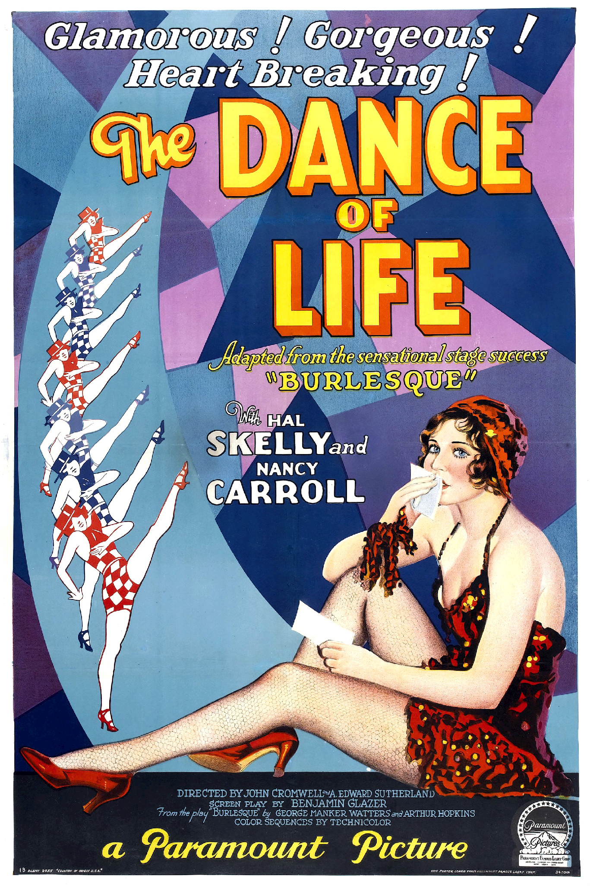
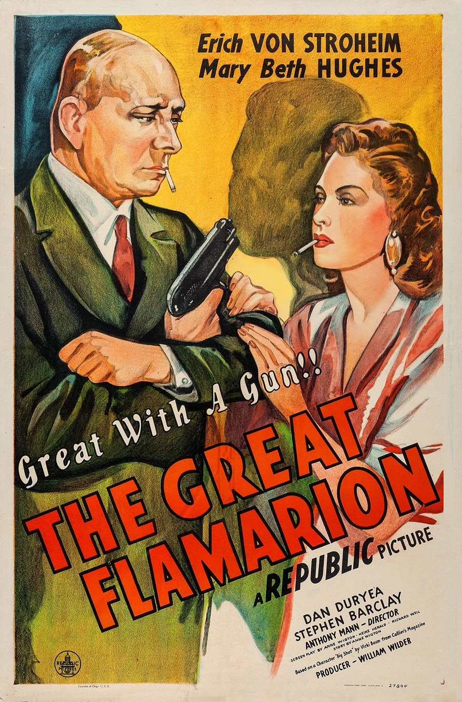
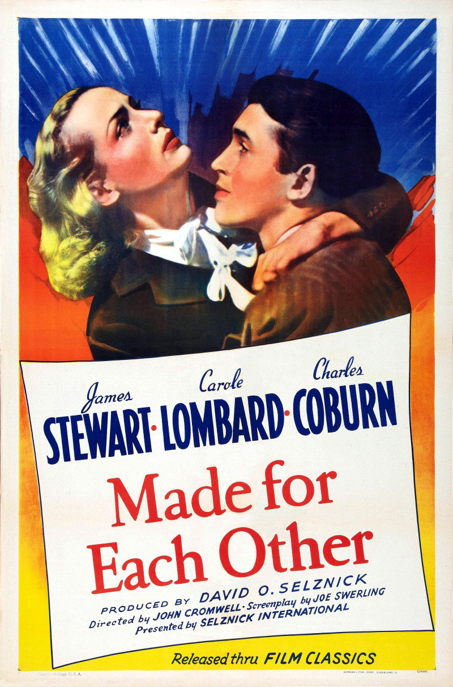

The Dance of Life
8.3
1929 1h 55m Musical
Burlesque comic Ralph "Skid" Johnson (Skelly), and specialty dancer Bonny Lee King (Carroll), end up together on a cold, rainy night at a tr…
5 commentsMovie Buff
9.0
1955 1h 59m Drama

Frankie Machine (Frank Sinatra) is released from the federal Narcotic Farm in Lexington, Kentucky with a set of drums and a new outlook on…
18 comments8.9
1945 1h 18m Mystery
The film opens following a murder at a cabaret in Mexico City in 1936, and then presents the events leading up to it in flashback. The Grea…
12 comments2.3
1964 1h 21m Comedy

The Martians Momar ("Mom Martian") and Kimar ("King Martian") are worried that their children Girmar ("Girl Martian") and Bomar ("Boy Marti…
465 comments5.8
1939 1h 32m Comedy
John Mason (James Stewart) is a young, somewhat timid attorney in New York City. He has been doing his job well, and he has a chance of bei…
56 comments